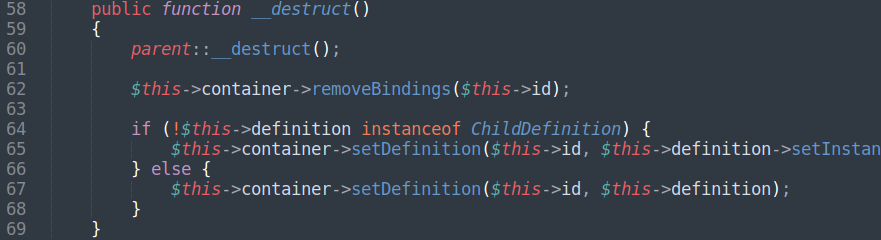

Variable rewrite with boolean and GMP Type Confusion
To build exploit for PHP Type Confusion bug we need to find in code:
1) Class that implements Serializable interface
2) Code line executed from __destruct method to rewrite object property
3) Find an object to rewrite props
Symfony package “symfony/dependency-injection” was taken for analysis.
This class has small number of __destruct methods. And it has code line to write property field into another property field, reachable from __destruct.
But project has line:
$this->removedBindingIds[(int) $bindingId] = true;
in removeBindings method.
It is enough to rewrite handle of GMP object.In the finish of GMP deserialization we rewrite Composer object props, because it has handle = 0x1.
Exploit build process is very similar with expoitation discussed in previous advisory.
F ile symfony/dependency-injection/Loader/Configurator/ServiceConfigurator.php
File symfony/dependency-injection/ContainerBuilder.php: